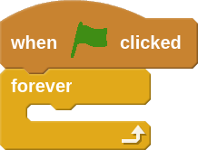

Tilt and Say
In this project we will take a look at the built in tilt sensor on the Arduino 101. Using the tilt sensor, we can control a character on the screen in Scratch by just moving the Arduino back and forth. The orientation of the 101 will match the graphic below.

- Let's begin by designing a custom sprite that we will control in Scratch. You can choose to make any sprite, but keep in mind that we will use this sprite later on to make our very first tilt game!
- Now with our new sprite selected, let's program it to move as we tilt the Arduino.

- We will start by bringing out the green flag and forever blocks since we will want our sprite to always follow the tilt.

- Now let's use the set x to block along with the Arduino tilt angle block to make our sprite move.

- When you click the green flag the sprite should start moving back and forth across the stage. If the sprite doesn't respond to the tilt, check the indicator light under More blocks. If it is not green, go back to Preparation or Project 1 for help getting connected.
- To get a better idea of what the tilt angle block is actually doing, you can make the character say the current value while it moves around the screen.
- Now see if you can modify this code to change how the sprite responds to tilt.
Can you:
- Make the sprite move faster or slower with the tilt?
- Make the sprite move along the y axis instead of the x axis?
- Advanced: Does the way you are holding the Arduino feel right to you? If not, can you change the tilt angle direction to make it feel more natural?
- Advanced: Make the sprite move along the x and y axis at the same time?